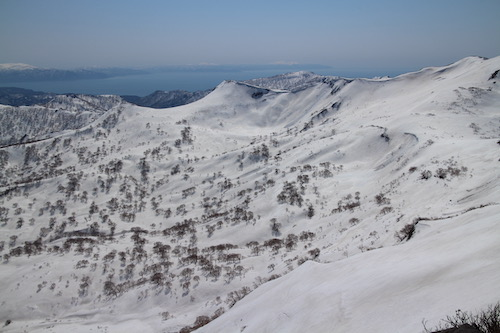
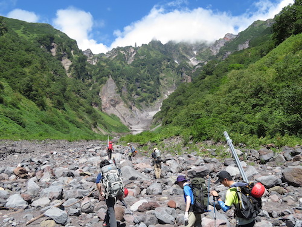
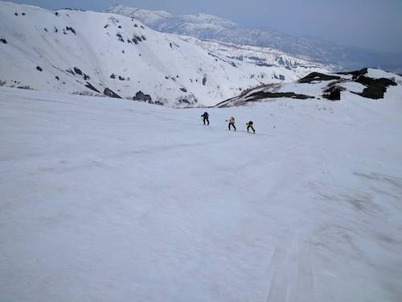
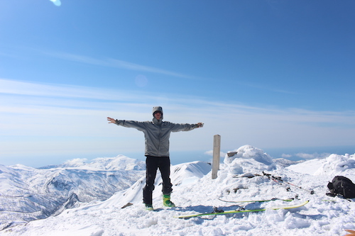
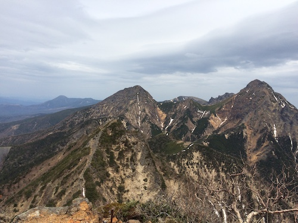
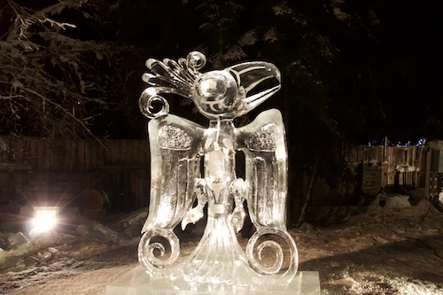

Japan

2022 |

2021 |

2018 |

2017 |

2016 |

2015 |
Patagonia
- 2023 Feb/Mar: Glacier calving
- 2020: Glacier dynamics
- 2019: Glacier dynamics

- 2018: Glacier dynamics, Accumulation
- 2017: Lake-ice interaction
- 2016: Calving tsunamis
- 2014: Lake-ice interaction
- 2013/14: Lake-ice interaction
- 2012/13: Glacier dynamics
Greenland
- 2022: Firn structure and meltwater retention in Qaanaaq Ice Cap
- 2021: Ice core drilling
- 2015: Glacier dynamics
- 2014: Ice core drilling
Antarctica
- 2021/22: Ice dynamics
- 2017/18: Basal melting, ice fracturing
- 2016: Glacier dynamics
Alaska
- 2017: Visiting GI and LeConte Glacier
- 2015: Visiting GI
Himalaya
- 2022 Oct/Nov: Glacier calving